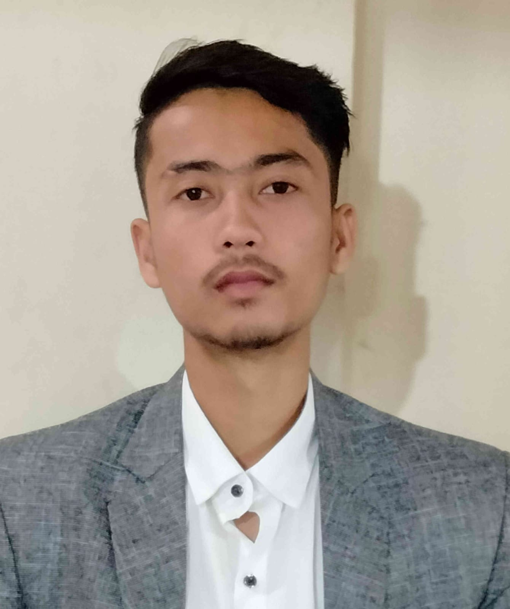

Prashant Kumar
Samastipur , Bihar ,India | +917667900189 | prashantkarn143@gmail.com

CAREER OBJECTIVE
To secure a responsible career opportunity in the field of Technology to fully
utilize my trainings and skills , while making a significant contribution to
the growth of the company and also to my professional and personal life by
accepting all the challenges and the opportunities.
ACADEMICS
Lakshmi Narain College Of Technology and Science Bhopal, MP
BTech in Computer Science with Machine learning and Artificial Intelligence
(CGPA: 8.78) Graduation
Date: June 2024
Gayatri Shiksha Niketan Jamshedpur, Jharkhand
Intermediate with Physics , Chemistry , Math , English and Computer Science as
Subjects (69.6%) Intermediate
Date: May 2020
PCS , Sakarpura -Hasanpur Samastipur, Bihar
Passed with (79.2%) Matriculation
Date: May 2018
PROJECTS AND INTERNSHIPS
OASIS INFOBYTE (internship) Remote
Java developer (4-weeks)
- Was given some projects to complete within a duration of 4weeks in which I made two projects ,both of them were console based java app.
- One was the ATM transaction operations app and other one was a console based MCQ exam.
QUIZOMANIA (project)
TECH-STACK: SpringBoot , Angular , Mysql
- This is a user friendly web app where a user can register himself and can practise MCQ type questions on different
topics.
TODO MANAGEMENT APP (project)
TECH-STACK: SpringBoot , Html ,Css , Mysql
- This is a simple web app giving a user a seamless experience to register himself and manage his todos list
LEADERSHIP AND MANAGEMENT EXPERIENCE
- Organised and managed some events on National Unity Day for the Computer Science Department in my college.
- Was the head of the Music Domain in LNCT , radio Club which gave me the opportunity to share my knowledge
in the field of music and to lead the members of the club.
- Have been the head boy of the school leading different houses of the school and during my duration I have organised
and managed many events.
ACHIEVEMENTS AND AWARDS
- Diploma Holder In Guitar from the Prayag Sangeet Samiti , Allahabad ,UP.
- Awarded as the Best Speaker in a speech competition held between several schools of our district.
- Awarded for Essay writing by the PRAYAS , Foundation , a NGO for the needy peoples.
SKILLS & INTERESTS
Technical Skills:
JAVA | OOP | SpringBoot | Operating Systems | Computer Networking | DBMS | AWS Cloud
Non-Technical Skills
Communication | Time Management | Problem Solving | Leadership
Interests
Cloud Computing , Writing , Singing , Musical Instruments , Cooking , Weight liftin